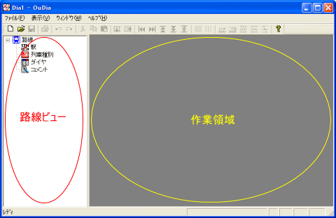

まず、 OuDia を起動してください（[スタート]メニュー→[すべてのプログラム]→[OuDia]→[OuDia]を選択してください）。
起動直後の OuDia のメインウインドウの様子は、以下のようなものです。

（図：起動直後の OuDia の画面）
中央のバーで仕切られた左側を『路線ビュー』と呼びます。『路線ビュー』には、[路線]・[駅]・[列車種別]・[ダイヤ]の４つのアイコンがあります。
バーの右側の領域を『作業領域』と呼びます。『時刻表』や『ダイヤグラム』は、この『作業領域』に表示されます。